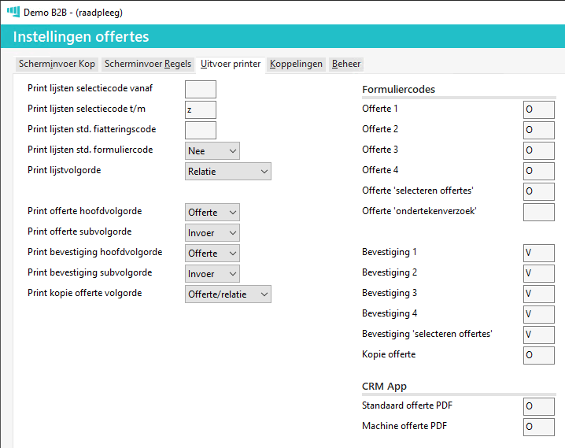

In Powerall Connect lijken veel modules qua menustructuur, schermstructuur en functionaliteit op elkaar. Hierdoor zijn veel instellingen dan ook hetzelfde.
Deze instellingen kunnen per module ingesteld worden, in het menu Instellingen modules / processen (BI) bij de betreffende module.
In deze paragraaf wordt uitleg gegeven over de belangrijkste functies van deze instellingen, zodat u weet wat de mogelijkheden zijn en waar deze zijn in te stellen. Bovendien zorgt dit ervoor dat bij de invoer van gegevens de kans op fouten wordt verminderd en dat er sneller gewerkt kan worden.
In veel Powerall Connect schermen kunnen bepaalde velden wel of niet zichtbaar, of al of niet verplicht, zijn.
Als er bijvoorbeeld niet gewerkt wordt met kostenplaatsen moeten deze velden ook niet zichtbaar zijn op het scherm. Verder kan er sprake zijn van velden die wel gebruikt worden, maar die niet aanpasbaar mogen zijn.
Zo kan het zijn dat u werkt met betaalcondities die per relatie ingesteld staan en u wilt voorkomen dat deze bij het invoeren, van bijvoorbeeld een order, gewijzigd worden. In dit geval kiest u ervoor het veld betaalconditie niet zichtbaar te maken op het invoer scherm.
Deze instellingen zijn te vinden in:
Per invoer scherm wilt u zoveel mogelijk velden invullen met standaardwaarden. Hierbij enkele voorbeelden:
Bij velden als magazijn, selectiecodes, etc. is er vaak sprake van een standaardcode die u vooraf ingevuld wilt hebben.
Een standaard vervaltermijnen van een X aantal dagen voor een offerte.
Bij het invoeren van een orderregel standaard 0,1 of 2 als aantal besteld in te stellen.
Deze instellingen zijn te vinden in:
Tabblad Scherminvoer Kop of Regel
Tabblad Beheer
Het werken met lay-outs is per bedrijf anders. Het ene bedrijf werkt met een lay-out per machinetype, per branche of afgestemd op de grootte van de offerte. Andere bedrijven daarentegen werken met een standaard lay-out voor alle offertes.
Daarnaast is dit ook per document verschillend. Voor een factuur wordt vaak gebruikt gemaakt van 1 lay-out terwijl bij offertes meerdere lay-outs gebruikt worden.
Bij het instellen van lay-outs moet per document een afweging worden gemaakt of gekozen wordt voor flexibiliteit (keuze tussen lay-outs) of snelheid (geen keuze).
Deze instellingen zijn te vinden in:
Tabblad Uitvoer printer.

De sortering van allerlei lijsten, documenten en schermen is vooraf in te stellen. Hiermee voorkomt u dat pakbonnen niet in de juiste volgorde worden afgedrukt of dat een lijst op relatiecode gesorteerd staat in plaats van datum.
Ook in de 'Selecteren ...' schermen is het handig om standaard de gewenste sortering in te stellen.
Deze instellingen zijn te vinden in:
Tabblad Scherminvoer Kop of Regel
Tabblad Uitvoer printer
Bij tabblad Beheer is het mogelijk om diverse standaard waarden of autorisaties in te stellen, denk hierbij aan:
Autorisaties voor bepaalde velden.
Standaard opvraag- of bewaartijd.
Artikel autonummering, (pak)bon-, creditnota-, factuur-, garantie-, offerte-, inkoop/verkoop order-, (voorraad)project-, rapport-, service-, stuk- (herwaardering), (artikel)trancering, voorloop lot-, werkordernummer.
Powerall Connect is uiterst flexibel om te bepalen wat u wilt koppelen en wat niet. Het juist instellen van de koppelingen zorgt ervoor dat Powerall Connect zich aanpast aan uw situatie.
Veel instellingen en tabellen zijn afhankelijk van deze koppelingen. Hieronder enkele voorbeelden:
Back-to-Back (BtB): Koppeling voorraad, verkooporder en inkooporder.
Prijsafspraken: Koppeling inkooporder, werkorder, verkooporder, facturering en offerte.
Gesloten machine-administratie: Koppeling machines, voorraad, grootboek, inkooporder, werkorder en verkooporder.
Productie: Koppelingen van nagenoeg alle modules.
Daarnaast kan het soms juist een voordeel zijn, dat bepaalde modules niet gekoppeld zijn. Bijvoorbeeld als u de machineadministratie gebruikt als database voor gegevens, maar de financiële administratie hier van gescheiden is. Of als er geen (nog) voorraadadministratie aanwezig of nodig is, maar wel een artikeladministratie.
Deze instellingen zijn te vinden in:
Tabblad Koppelingen
Standaard is het in Powerall Connect mogelijk elk overzicht te exporteren naar PDF, Excel, (Word) of te mailen. Voor meer informatie zie Wat kan ik allemaal doen met een overzicht?
Bij het zoeken op symbool tekens (bijv. diameter Ø) vallen deze buiten de standaard van t/m selectie van spatie t/m zzz.
Geef dit teken bij de van selectie op.
Gerelateerde onderwerpen
Copyright ©